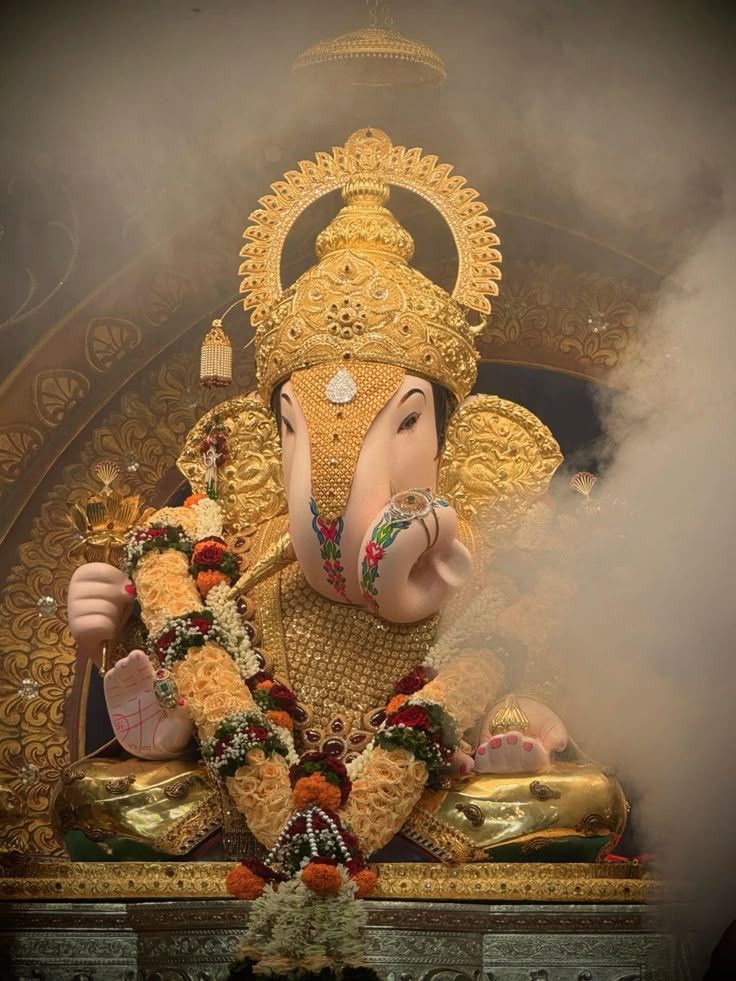
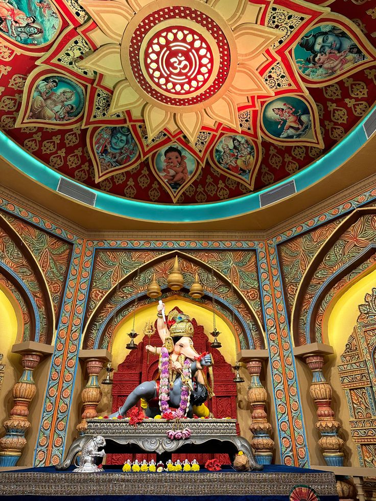
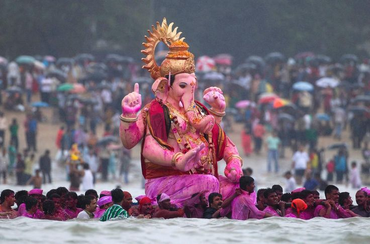

About the Festival
Ganesh Chaturthi, also known as Vinayaka Chaturthi, is a Hindu festival celebrating the arrival of Lord Ganesha to earth from Kailash Parvat with his mother Goddess Parvati/Gauri. The festival is marked with the installation of Ganesha clay idols privately in homes and publicly on pandals.
The celebrations last for 10 days, ending on Anant Chaturdashi, during which the idol is immersed in a body of water, symbolizing the return of Ganesha to Mount Kailash.
Traditions and Rituals
The festival is a time for devotion, community, and joy. Some key traditions include:
- Idol Installation (Pratishthapana): Bringing the idol of Lord Ganesha home with great fervor.
- Puja and Aarti: Daily worship, prayers, and singing of devotional songs.
- Modak Offering: Preparing and offering 'Modak', a sweet dumpling believed to be Lord Ganesha's favorite food.
- Community Feasts: Sharing meals and sweets with family and friends.
- Visarjan: The ceremonial immersion of the idol in a river or sea.
Festival Gallery




May the divine blessings of Lord Ganesha bring you and your family joy and prosperity.